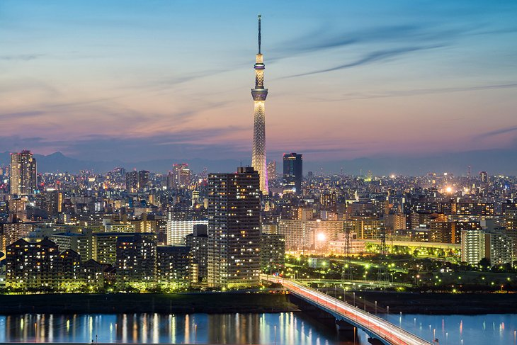

Seoul, South Korea
With a population of more than 11.8 million, the capital city of South Korea,
Seoul is the largest city in South Korea and the cultural and financial epicenter of the East Asia.
It features a fascinating mix of digital technology and ancient traditions,
its home to endless night life districts and food vendors.
In addition, the city is characterized by the serene dotted Buddhist temples,
a high pressure extraordinarily education system,
extraordinary architecture and rows of grey monotonous buildings.
You can get in to Seoul through the Incheon Airport and get to the city through A’REX train.
Being stuck in traffic jams is a common scenario in Seoul city and if you want to avoid this,
it recommended you use underground trains.
Seoul Attractions

Gyeongbokgung Palace
(Korean:경복궁)

Bukchon Hanok Village
(Korean:북촌 한옥마을)

Cheonggyecheon
(Korean:청계천)
See More
Tokyo, Japan
Tokyo is the center of the latest advanced technology in every sector of Japan’s economy among other major cities of Japan.
It is the blessed capital city of Japan. It has a wide selection of attractions for tourists to be enjoyed.
The highest percentage of the attractions is the historic landmark collection.
Japan is known to have existed for over a thousand years with many dynasties governing the kingdom.
This long era of dynasties has left behind many marks to the Japanese society, to be recognized in the later millenniums.
Tokyo also respects the Japanese antique culture by having a cultural center where traditional dances are performed.
Tokyo Attractions

Tokyo National Meseum
(Japanese: 東京国立博物館)

The Tokyo Skytree
(Janpanese: 東京スカイツリー)

The Meiji Shrine
(Japanese: 明治神宮)
See More
NewYork City, UnitedStates of America
New York is a title referring to one of the states of the United States of America and one of rhe largest cities in America,the New York City.
New York has been a tourist destination for foreign tourists from all over the world and a dream destination to many teenagers and young adults.
New York is famous for its significant history, its formation and many attractive sites within it.
New York’s city population has been expanded over the years by foreigners who have been convinced by the beauty of the city that it is a nice place to dwell in.
New York State has lots to offer in the tourism sector with sincerely, highly-regarded hospitality services.
NewYork Attractions

Statue of Liberty and Battery Park

Empire State Building
See More